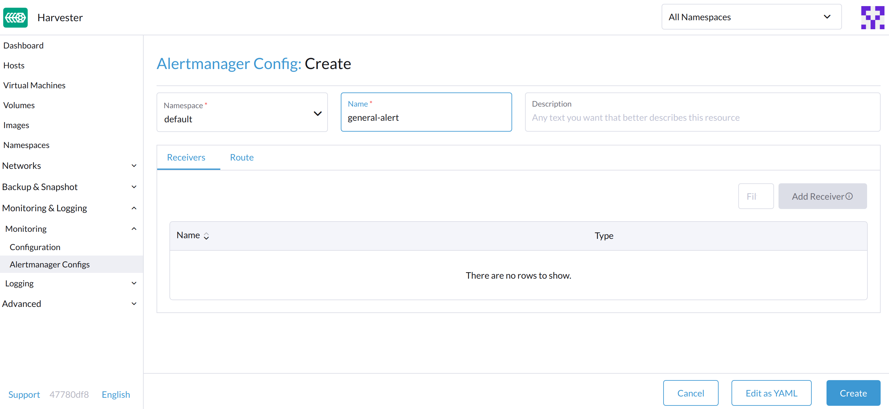
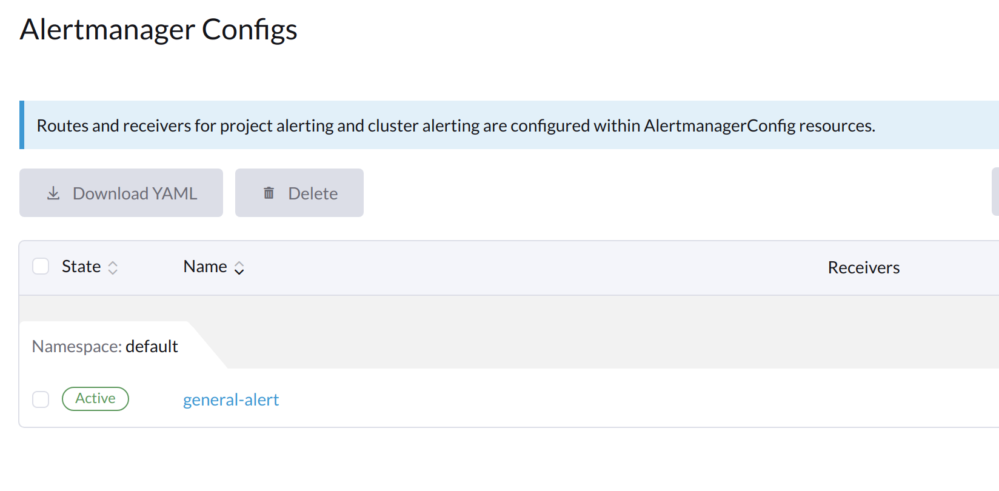
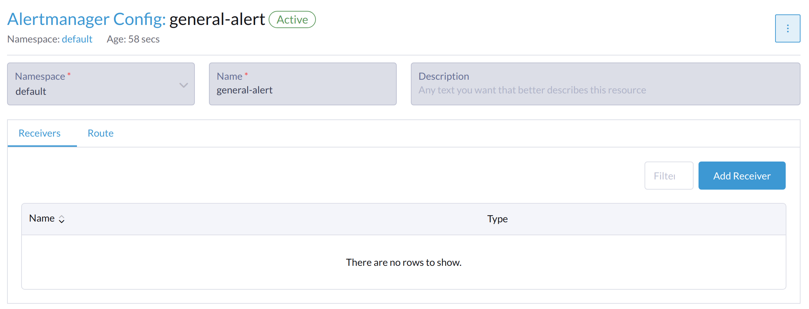
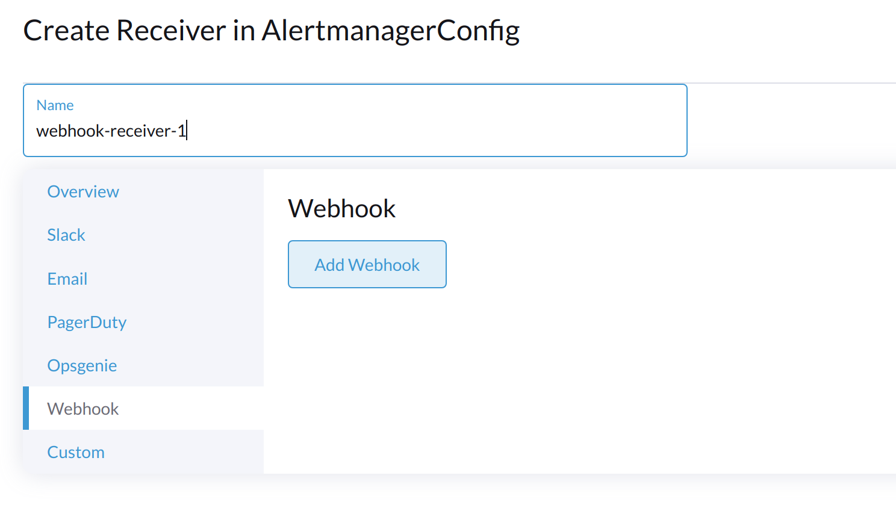
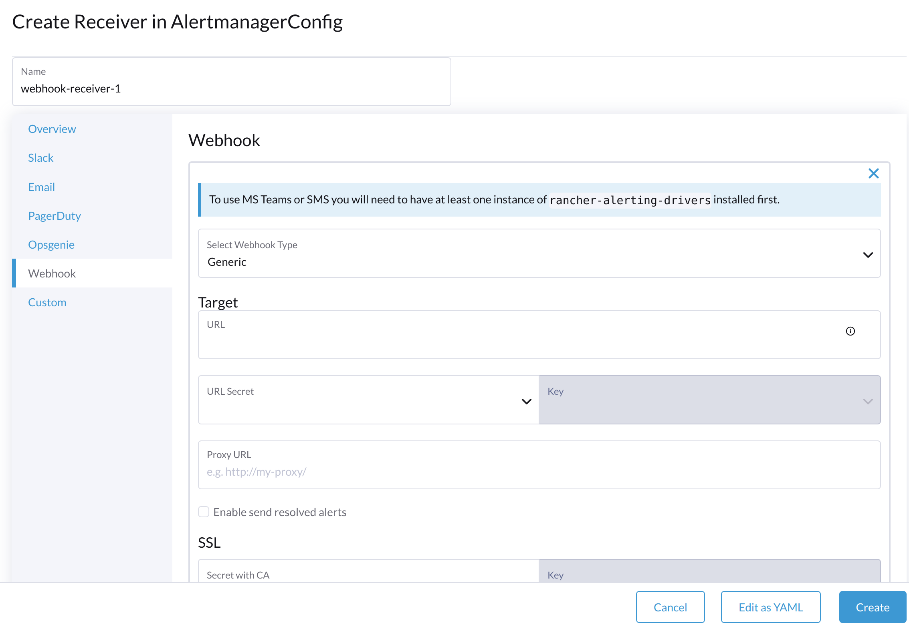

Monitoring
The monitoring feature is now implemented with an add-on and is disabled by default in new installations.
You can enable and disable the rancher-monitoring add-on after installation using the SUSE Virtualization UI or the configuration file.
Dashboard Metrics
SUSE Virtualization has provided a built-in monitoring integration using Prometheus. Monitoring is automatically enabled during installation.
From the Dashboard page, users can view the cluster metrics and top 10 most used VM metrics respectively.
Also, users can click the Grafana dashboard link to view more dashboards on the Grafana UI.
|
Only admin users are able to view the cluster dashboard metrics. Additionally, Grafana is provided by Reference: values.yaml |
VM Detail Metrics
For VMs, you can view VM metrics by clicking on the VM details page > VM Metrics.

|
The current |
For example, in a Linux OS, the free -h command outputs the current memory statistics as follows
$ free -h
total used free shared buff/cache available
Mem: 7.7Gi 166Mi 4.6Gi 1.0Mi 2.9Gi 7.2Gi
Swap: 0B 0B 0B
The corresponding Memory Usage is (1 - 4.6/7.7) * 100%, roughly 40%.
Live migration status and metrics
Live migration is a critical feature for ensuring workload uptime. You can monitor the progress of virtual machine live migration directly from the Harvester UI via the rancher-monitoring add-on.
-
Enable the rancher-monitoring add-on.
-
Go to Virtual Machines.
-
Locate the virtual machine in the list, and then click the name to view its details.
-
Go to the Migration tab.
The Migration tab is divided into the following sections:
-
General information: This section shows the current migration phase, the source and target nodes, and the migration start and end times.
-
Real-time metrics: These metrics are generated by Prometheus and are retained for five days.
Metric Description Migration Data Remaining Bytes
Amount of guest operating system data that has not been migrated
Migration Data Processed Bytes
Amount of guest operating system data that has already been migrated
Migration Memory Transfer Rate
Rate at which memory is transferred
Migration Dirty Memory Rate
Rate at which data is changed within the guest’s memory but not synchronized with the data on disk
If the Migration Data Remaining Bytes value steadily decreases as the Migration Data Processed Bytes value increases, the data is being successfully migrated to the destination.
If the Migration Data Remaining Bytes value is fluctuating while the Migration Dirty Memory Rate remains very high, the virtual machine is under significant strain. In some cases, this can prevent the migration from completing.
-
Migration events: These virtual machine-specific event records are generated by the Kubernetes API server (kube-apiserver) and are retained for one hour.
How to Configure Monitoring Settings
Monitoring has several components that help to collect and aggregate metric data from all Nodes/Pods/VMs. The resources required for monitoring depend on your workloads and hardware resources. SUSE Virtualization sets defaults based on general use cases, and you can change them accordingly.
Currently, Resources Settings can be configured for the following components:
-
Prometheus
-
Prometheus Node Exporter
From UI
On the Advanced page, you can view and change the resource settings as follows:
-
Go to the Advanced > Addons page and select the rancher-monitoring page.
-
From the Prometheus tab, change the resource requests and limits.
-
Select Save when finished configuring the settings for the rancher-monitoring addon. The Monitoring deployments restart within a few seconds. Please be aware that the reboot can take time to reload previous data.
|
The UI configuration is only visible when the rancher-monitoring addon is enabled. |
The most frequently used option is the memory setting:
-
The
Requested Memoryis the minimum memory required by theMonitoringresource. The recommended value is about 5% to 10% of the system memory of one single management node. A value less than 500Mi will be denied. -
The
Memory Limitis the maximum memory that can be allocated to aMonitoringresource. The recommended value is about 30% of the system’s memory for one single management node. When theMonitoringreaches this threshold, it will automatically restart.
Depending on the available hardware resources and system loads, you may change the above settings accordingly.
|
If you have multiple management nodes with different hardware resources, please set the value of Prometheus based on the smaller one. |
|
When an increasing number of VMs get deployed on one node, the |
From CLI
You can use the following kubectl command to change resource configurations for the rancher-monitoring addon: kubectl edit addons.harvesterhci.io -n cattle-monitoring-system rancher-monitoring.
The resource path and default values are as follows:
apiVersion: harvesterhci.io/v1beta1
kind: Addon
metadata:
name: rancher-monitoring
namespace: cattle-monitoring-system
spec:
valuesContent: |
prometheus:
prometheusSpec:
resources:
limits:
cpu: 1000m
memory: 2500Mi
requests:
cpu: 850m
memory: 1750Mi
|
You can still make configuration adjustments when the addon is disabled. However, these changes only take effect when you re-enable the addon. |
Alertmanager
SUSE Virtualization uses Alertmanager to collect and manage all the alerts that happened/happening in the cluster.
Alertmanager Config
Enable/Disable Alertmanager
Alertmanager is enabled by default. You may disable it from the following config path.
Change Resource Setting
You can also change the resource settings of Alertmanager as shown in the picture above.
Configure AlertmanagerConfig from WebUI
To send the alerts to third-party servers, configure AlertmanagerConfig.
-
On the UI, go to Monitoring & Logging → Monitoring → Alertmanager Configs.
-
On the Alertmanager Config: Create screen, specify a namespace and name, and then click Create.
 -
Click the name of the configuration that you just created.
 -
Click Add Receiver.
 -
Specify a name for the receiver, and then select a receiver type.
 -
Configure the required settings, and then click Create.

To set up Microsoft Teams or SMS webhooks, first install the rancher-alerting-drivers app using the following commands:
helm repo add rancher-charts https://charts.rancher.io/
helm repo update
helm install rancher-charts/rancher-alerting-drivers \
--set sachet.enabled=false \ # Set to true if you want to use SMS Webhook
--set prom2teams.enabled=true \ # Set to true if you want to use MS Teams Webhook
--namespace cattle-monitoring-system \
--generate-nameFor detailed configuration instructions, see Receiver Configuration in the Rancher documentation.
If your environment does not have direct internet access (air-gapped), you must manually download the Helm chart and related container images, and then upload them to the SUSE Virtualization cluster.
-
Download the rancher-alerting-drivers Helm chart and package it.
helm pull rancher-charts/rancher-alerting-drivers --version <VERSION>
-
Download the required images.
docker save -o sachet.tar rancher/mirrored-messagebird-sachet:<VERSION> docker save -o prom2teams.tar rancher/mirrored-idealista-prom2teams:<VERSION>
-
Upload the chart and images to the SUSE Virtualization cluster.
-
Load the images on all SUSE Virtualization nodes.
docker load -i sachet.tar docker load -i prom2teams.tar
-
Install rancher-alerting-drivers on the SUSE Virtualization cluster.
|
SUSE Virtualization does not manage upgrades of the |
Configure AlertmanagerConfig from CLI
You can also add AlertmanagerConfig from the CLI.
Exampe: a Webhook receiver in the default namespace.
cat << EOF > a-single-receiver.yaml
apiVersion: monitoring.coreos.com/v1alpha1
kind: AlertmanagerConfig
metadata:
name: amc-example
# namespace: your value
labels:
alertmanagerConfig: example
spec:
route:
continue: true
groupBy:
- cluster
- alertname
receiver: "amc-webhook-receiver"
receivers:
- name: "amc-webhook-receiver"
webhookConfigs:
- sendResolved: true
url: "http://192.168.122.159:8090/"
EOF
# kubectl apply -f a-single-receiver.yaml
alertmanagerconfig.monitoring.coreos.com/amc-example created
# kubectl get alertmanagerconfig -A
NAMESPACE NAME AGE
default amc-example 27s
Example of an Alert Received by Webhook
Alerts sent to the webhook server will be in the following format:
{
'receiver': 'longhorn-system-amc-example-amc-webhook-receiver',
'status': 'firing',
'alerts': [],
'groupLabels': {},
'commonLabels': {'alertname': 'LonghornVolumeStatusWarning', 'container': 'longhorn-manager', 'endpoint': 'manager', 'instance': '10.52.0.83:9500', 'issue': 'Longhorn volume is Degraded.',
'job': 'longhorn-backend', 'namespace': 'longhorn-system', 'node': 'harv2', 'pod': 'longhorn-manager-r5bgm', 'prometheus': 'cattle-monitoring-system/rancher-monitoring-prometheus',
'service': 'longhorn-backend', 'severity': 'warning'},
'commonAnnotations': {'description': 'Longhorn volume is Degraded for more than 5 minutes.', 'runbook_url': 'https://longhorn.io/docs/1.3.0/monitoring/metrics/',
'summary': 'Longhorn volume is Degraded'},
'externalURL': 'https://192.168.122.200/api/v1/namespaces/cattle-monitoring-system/services/http:rancher-monitoring-alertmanager:9093/proxy',
'version': '4',
'groupKey': '{}/{namespace="longhorn-system"}:{}',
'truncatedAlerts': 0
}
|
Different receivers may present the alerts in different formats. For details, please refer to the related documents. |
Known Limitation
The AlertmanagerConfig is enforced by the namespace. Gloabl-level AlertmanagerConfig without a namespace is not supported.
We have already created a GitHub issue to track upstream changes. Once the feature is available, SUSE Virtualization will adopt it.
View and Manage Alerts
From Alertmanager Dashboard
You can visit the original dashboard of Alertmanager from the link below. Note that you need to replace the-cluster-vip with the actual cluster-vip:
The overall view of the Alertmanager dashboard is as follows.
You can view the details of an alert:

From Prometheus Dashboard
You can visit the original dashboard of Prometheus from the link below. Note that you need to replace the-cluster-vip with the actual cluster-vip:
The Alerts menu in the top navigation bar shows all defined rules in Prometheus. You can use the filters Inactive, Pending, and Firing to quickly find the information that you need.

Troubleshooting
For Monitoring support and troubleshooting, please refer to the troubleshooting page .